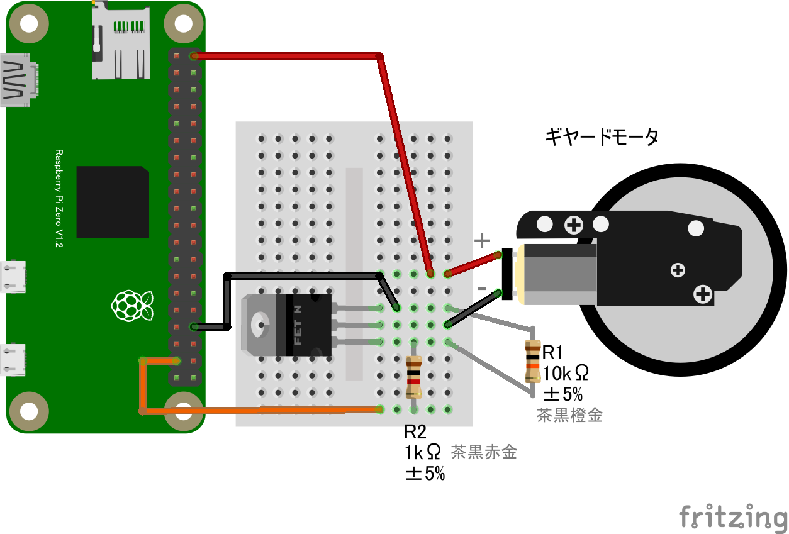

Lチカ (GPIO OUTPUT)
配線図

GPIO PORT26にLED+抵抗を繋ぎます
GPIO PORT26にLED+抵抗を繋ぎます
GPIO PORT26にモーター制御回路を繋ぎます。コードはLチカと共通です
 5V以外のDC電源も使用可能です。
5V以外のDC電源も使用可能です。
 D4184モジュール
D4184モジュール
 5V以外のDC電源も使用可能です。
5V以外のDC電源も使用可能です。



import {requestGPIOAccess} from "./node_modules/node-web-gpio/dist/index.js";
const sleep = msec => new Promise(resolve => setTimeout(resolve, msec));
async function blink() {
const gpioAccess = await requestGPIOAccess();
const port = gpioAccess.ports.get(26);
await port.export("out");
for (;;) {
await port.write(1);
await sleep(1000);
await port.write(0);
await sleep(1000);
}
}
blink();